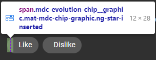
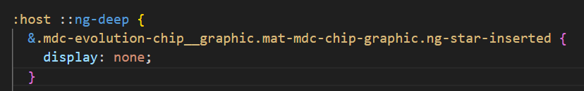
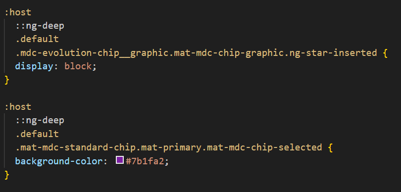
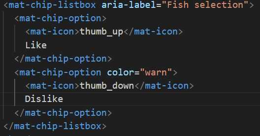
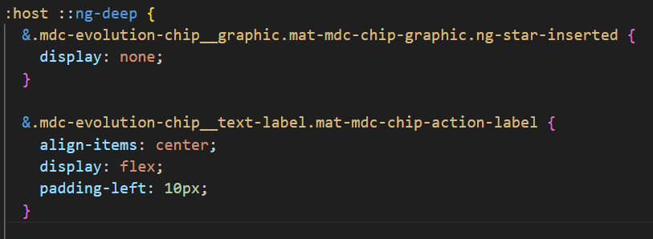
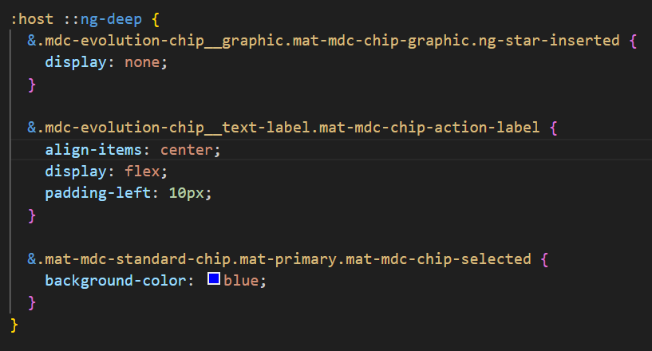

Primeiro passo é localizar a classe que contém o ícone.
Para isso, abra a ferramenta do desenvolvedor (DevTools / Inspecionar) e selecione a parte do componente que deseja acessar.
Agora que sabemos qual classe devemos modificar, vamos fazer a alteração em nosso código.
Diferente dos exemplos anteriores, desta vez vamos utilizar uma cadeia de estilização para modificar todos os componentes. Primeiro, removeremos o ícone de todos os componentes e, em seguida, desfaremos essa alteração para restaurar o estilo do exemplo padão.
 Agora, vamos adicionar os novos ícones dentro do componente e aplicar os estilos necessários.
 Por último, vamos modificar a cor padrão do ícone "Like" para azul.
